7210B10 R.R. CENTRE PILLAR
- Path
- Procedures > 72 PANELS AND FRAMES > 7210 REMOVING-REFITTING > 7210B STRUCTURAL ELEMENTS (CENTRE AND REAR SECTION) > 7210B10 R.R. CENTRE PILLAR
- Kind
- repair procedure (removal / refitting; the operation number is the code)
- Applies to
- all engines; all production periods
- Interactive page
- https://sloeber94.github.io/elrnDB-fCrm/en/#/194001224
Applies to: all engines; all production periods
 Removing
Removing
 Refitting
RefittingOp. 7210B18 R.R. ROOF PANEL SUPPORTING CROSSMEMBER
- Check that the components connected are not distorted by checking the bodyshell alignment measurements using suitable equipment (gauges, templates or jigs).
- Straighten the body as necessary.
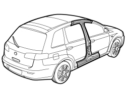
Applies to: all engines; all production periods
1. Remove the P.V.C. treatment from the underdoors using a hot air blower plus a scraper and/or wire brush.
2. Use the circular saw following the cutting lines in the diagram.
3. The diagram illustrates the sections representing the most important points in order to allow the operator to adjust the position and the depth of the cut in order not to damage the panels underneath.
- Use the rotary brush to clean the edges of the panel to highlight the spot welds.
4. Use the chamfering machine and chamfer the spot welds along the perimeter of the pillar.
5. Use the drill and chamfer the spot welds in the areas shown in the diagram.
- Use the hammer and chisel and remove the spot welds chamfered previously.
6. Remove the pillar.
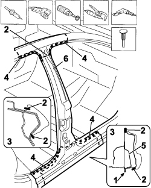
Applies to: all engines; all production periods
1. Use the chamfering machine on the spot welds shown in the diagram.
2. Use the drill and chamfer the spot welds in the areas shown in the diagram.
- Use the hammer and chisel and remove the spot welds chamfered previously.
3. Remove the intermediate reinforcement offcut.
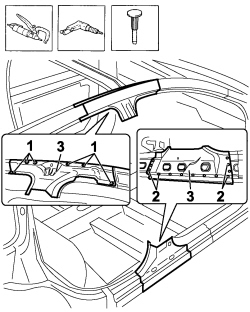
Applies to: all engines; all production periods
1. Use the chamfering machine to remove the spot welds shown in the diagram.
- Use the hammer and chisel and remove the spot welds chamfered previously.
2. Remove the internal reinforcement offcut.
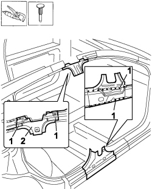
Applies to: all engines; all production periods
- Straighten the edges of the vehicle using a hammer and dolly block.
- Remove the spot weld residues using a disc grinder.
- Use a rotary brush to clean the areas treated previously.
1. Apply electro-galvanizing paint.
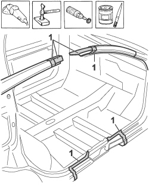
Applies to: all engines; all production periods
1. Work at the bench and cut the centre pillar making sure that a section of the panel remains for overlapping.
2. Use the drill to make openings at the points shown.
3. Remove the anti-corrosion treatment from the entire perimeter using the rotatry brush.
- Apply electro-weldable paint to the edges treated previously.
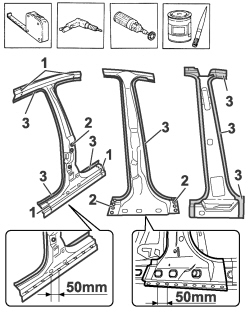
Applies to: all engines; all production periods
Refitting
Removing1. Position the internal pillar lining correctly on the vehicle using the fastenings (1a) for centering and secure using self-locking clamps.
2. Use a spot welder in the areas shown.
3. Use a MIG welder and seam weld in the areas shown in the diagram.
- Correct any distortions to the panel using a hammer and dolly block.
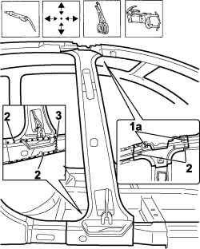
Applies to: all engines; all production periods
1. Use a disc grinder to level and remove the welding.
- Use a rotary brush to clean the areas welded previously.
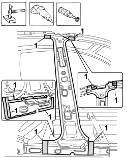
Applies to: all engines; all production periods
1. Position the pillar reinforcement correctly on the vehicle and secure it using self-locking clamps.
2. Tack the reinforcement by making a few spot welds.
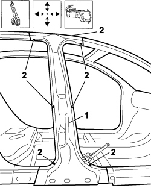
Applies to: all engines; all production periods
1. Overlap the pillar correctly on the vehicle and secure it using self-locking clamps.
2. Use the spot welder and tack the pillar with a few spot welds.
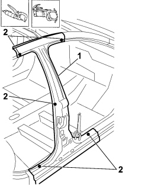
Applies to: all engines; all production periods
- Refit the half hinges for the rear door using the fixing bolts.
1. Fit the rear door.
2. Fit the front door.
- Check the alignment and the surrounding gaps, then remove the doors and the hinges.
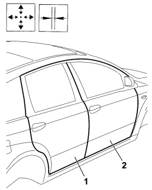
Applies to: all engines; all production periods
1. Use the circular saw the underdoor by overlapping.
2. Use the circular saw and cut the upper part of the roof connector by overlapping.
3. Remove the excess panel edges.
4. Remove the pillar from the vehicle.
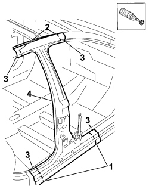
Applies to: all engines; all production periods
1. Use a spot welder in the areas shown in the diagram.
2. Use a MIG welder and weld the openings made previously in the replacement part.
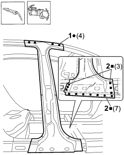
Applies to: all engines; all production periods
- Correct any distortions to the panel using a hammer and dolly block.
1. Use a disc grinder to level and remove the welding.
- Use a rotary brush to clean the areas welded previously.
- Apply anti-oxidant protection to the areas involved in the welding.
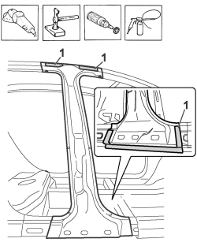
Applies to: all engines; all production periods
1. Position the centre pillar correctly on the vehicle.
2. Use a MIG welder and seam weld on the upper edge and the underdoor panels.
3. Use a MIG welder and weld the openings made previously in the replacement part.
4. Use a spot welder in the areas shown in the diagram.
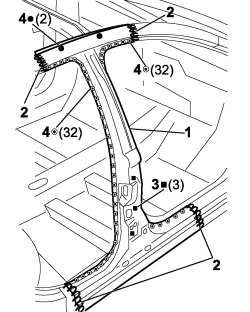
Applies to: all engines; all production periods
- Correct any distortions to the panel using a hammer and dolly block.
1. Use a disc grinder to level and remove the welding.
- Use a rotary brush to clean the areas welded previously.
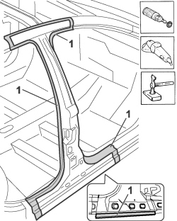
Applies to: all engines; all production periods
1. Apply anti-oxidant protection to the areas involved in the welding.
- Seal the join lines between the replacement part and the vehicle.
2. Apply PVC sealant to the underdoor panel.
- Proceed with the painting stage.
3. Apply wax-based oil protection to the inside of the underdoor side member using the existing openings.
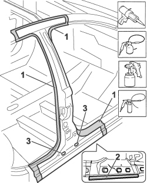
Applies to: all engines; all production periods